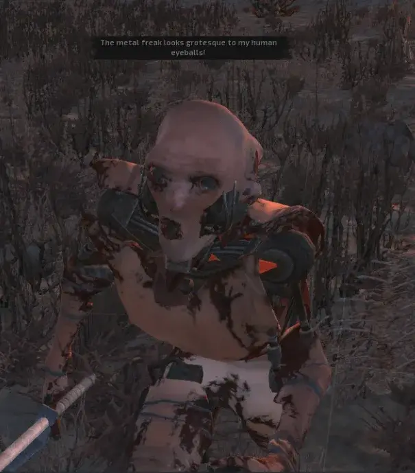

Addon
Try To Act Human
- Downloads
- 3,787
Hello fellow hUmmmans.
Changes:
- Bot grenade throw accuracy reduced.
- Reaction times should be more human like.
- Scavs are less likely to swarm the player when shooting and making noise.
- Bot accuracy adjusted.
- Bot engagement ranges reduced.
- Bot hearing randomization increased. They should have a harder time pin pointing your location when you shoot at them from a far.
Installation guide:
-
Download and unzip the “Try To Act Human” mod archive.
-
Open the unzipped folder — inside, you’ll find a BepInEx folder.
-
Drop the entire BepInEx folder into your SPTarkov root directory (the same folder that has EscapeFromTarkov.exe).
-
Merge and overwrite if prompted.
-
Launch the game.
-
Open the SAIN config menu f12.
-
Select the preset labeled “Try To Act Human.”
-
Enjoy.
Feedback is welcome for future balancing updates!

Version
1.1.1
Parent mod 4.3.1
3,572 downloads84.4 KB
This version should make the bots less of a spinjutsu masters,
- Increased angle aim time from 1.25 for all
- Increased distance aim time to 1.25 for all
- Also disabled AI limit
VirusTotal: report 1
Version
1.1.0
Parent mod 4.3.1
111 downloads84.3 KB
This update should make the bots harder.
- Lowered scatter for scavs from 1 to 0.75
- Lowered scatter for bosses, guards, rogues, raiders from 1 to 0.5
- Lowered global aggression from 1 to 0.25
- Disabled bunny hopping and jump pushing for all personalities
- Increased precision for PMCS from 1 to 1.75
- Increased precision for bosses, guards, rogues, raiders from 1 to 1.5
- Increased suppression resistance for scavs from 0 to 0.25
- Increased suppression resistance for PMCS from 0 to 0.75
- Increased suppression resistance for bosses, guards, rogues, raiders from 0 to 0.5
- Reduced scav weapon proficiency from 0.5 to 0.25
- Increased PMC weapon proficiency from 0.5 to 0.75
- Reduced scatter multiplier while moving for PMCS, bosses, guards, raiders, rogues
- Reduced angle aim time and distance aim time for PMCS, bosses, guards, raiders, rogues
- And changes to hearing distances and other small changes here and there
VirusTotal: report 1
Version
1.0.0
Parent mod 4.3.1
104 downloads83.2 KB
Initial release for SAIN 4.3.1 .
VirusTotal: report 1